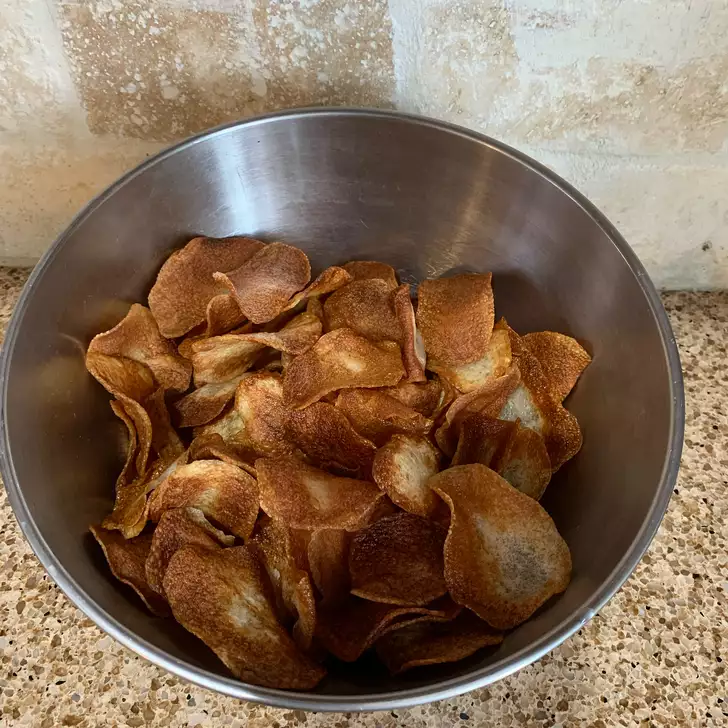

Homestyle Potato Chips

Homestyle Potato Chips
Crispy homestyle potato chips? That's a yes from me! Turn potatoes into a delicious appetizer with this recipe.
Ingredients
- 4 medium potatoes, peeled and sliced paper-thin
- 3 tablespoons salt, plus more to taste
- 1 quart oil for deep frying